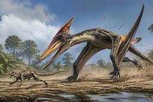
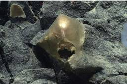

ナゾロジー
https://nazology.kusuguru.co.jp
身近に潜む科学現象から、ちょっと難しい最先端の研究まで、その原理や面白さを分かりやすく伝えられるようにニュースを発信していきます。最新の科学技術やおもしろ実験、不思議な生き物を通して、もう一度、皆さんの心にナゾを解き明かす「ワクワクの火」を灯したいと思っています。
フィード
森に作った「空中の橋」をオランウータンが初利用ーー2年越しの夢が実現
ナゾロジー
森の中に造られた「空中の橋」。 それを渡るのは、人間ではなくオランウータンです。 しかもこの瞬間は、保護活動家たちが2年間も待ち続けた「決定的な一歩」でした。 インドネシア・スマトラ島で、深刻な絶滅危機にあるスマトラオランウータンが、人工的に設置されたキャノピーブリッジを使って道路を横断する様子が初めて確認されました。 この成果は、分断された森を再びつなぐ可能性を示す重要な出来事として注目されています。 実際の映像を見てみましょう。
4時間前
警備員の「低賃金」「訓練不足」が一般市民を危険にさらしている
ナゾロジー
ショッピングモールや駅、病院などでトラブルが起きたとき、真っ先に駆けつけるのは誰でしょうか。 ニュースで危険な出来事を耳にすることもありますが、現地で人々の安全を守ろうとしているのはだれでしょうか。 警備員たちです。 しかし実は、その“最前線の守り手”の多くが、十分な報酬や訓練を受けていない可能性がああります。 アメリカのカリフォルニア大学バークレー校（UCB）は、州内に約18万6000人いる民間警備員について、統計データをもとに賃金や労働環境、離職率などを分析し、その結果を報告しています。 この報告書は、UC Berkeley Labor Centerが2026年4月に公表したものです。
5時間前
恋人を「最高の相手」と思うことには「意外なデメリット」があった
ナゾロジー
「この人は自分にはもったいないくらい素敵な相手だ」 恋愛の中で、こんなふうに感じたことはないでしょうか。 相手を心から魅力的だと思えることは、関係を深めるうえで大切な要素に思えます。 しかし独ヘルムート・シュミット大学（HSU）の最新研究で、この感覚には意外な“落とし穴”が潜んでいる可能性があるようです。 それによると「パートナーをどれだけ魅力的だと感じているか」が、恋愛の満足度だけでなく、自分自身の評価にも影響を与えることが明らかになりました。 具体的には、パートナーを「最高の相手だ」と思うことで、自分の評価が下がりやすくなる傾向にあったのです。 研究の詳細は2026年4月10日付で学術誌『SSRN』に掲載されています。
9時間前
職場での「絵文字」使用は、自分の評価に影響を及ぼす 1
1
ナゾロジー
「このメッセージ、どう送るべきか…」 仕事のチャットでトラブルを伝えるとき、笑顔の絵文字をつけて柔らかくするべきか、それともそのまま送るべきか迷ったことはありませんか。 実はこの“ちょっとした判断”が、あなたの「有能さ」や「仕事の適切さ」の評価に影響している可能性があります。 カナダのオタワ大学（University of Ottawa）の研究チームによる最新の調査は、職場における絵文字の使い方が、想像以上に重要な意味を持つことを明らかにしました。 この研究は2026年1月29日付で『Collabra: Psychology』に掲載されています。
10時間前
「働かないオスバチ」は実は働きバチより頭が柔らかいと判明――なぜなのか？
ナゾロジー
イギリスのチェスター大学（University of Chester）などの研究チームが、マルハナバチのオス36匹とメスの働きバチ33匹、合計69匹を比べたところ、巣の中では何もしない「怠け者」として知られるオスバチが、初めて巣の外に出た際には働きバチの約2倍にあたる時間を動き回り「頭の切り替え」テストでは、オスのほうが間違いの回数が有意に少なかったのです。 いったいなぜ、巣の中では何もしないはずのオスバチが、働きバチよりも柔軟に振る舞えるのでしょうか？ 研究内容の詳細は2026年4月10日に学術誌『Animal Cognition』にて公開されています。
21時間前
カオス系の中に「秩序の核」が存在することを量子AIが発見――実証にも成功
ナゾロジー
イギリスのユニバーシティ・カレッジ・ロンドン（UCL）で行われた研究によって、量子コンピュータとAIを組み合わせた新手法「QIML」が、カオス系の奥底に隠れた「秩序の核」をわずか300個足らずのパラメータで丸ごと取り出せることが示されました。 研究ではこの「秩序の核」をAIの”羅針盤”として組み込むと、最先端のAIモデルが軒並み破綻した長期予測で、唯一安定な結果を出すことに成功しています。 共同筆頭著者のXiao Xue氏は「量子コンピューティングを古典的な機械学習と有意義に統合し、複雑な動的システムに取り組めることを初めて実証しました」と述べています。 いったいなぜ、量子コンピュータはこれほど少ない道具でカオスの秩序を捉えられたのでしょうか？ 研究内容の詳細は2026年4月17日に『Science Advances』にて発表されました。
21時間前
建設現場から「2000年前のローマ時代のパン」が見つかる 1
ナゾロジー
普段、考古学の発掘で見つかるものといえば、土器や武器、建物の跡などを思い浮かべる人が多いでしょう。 しかし今回、スイスの建設予定地から見つかったのは、なんと「パン」でした。 発見されたのは、黒く炭化した小さな丸い物体です。 調査の結果、これは約2000年前のローマ時代のパンである可能性が高いとされました。 では、なぜ2000年前のパンが、現代まで残っていたのでしょうか。
1日前

空飛ぶ翼竜が「地上を走って獲物狩り」していた足跡化石を発見か
ナゾロジー
空を飛ぶ翼竜でも、地上をダッシュして獲物を追いかけることはあったようです。 米テキサス大学オースティン校（UT Austin）の最新研究で、韓国にある白亜紀の地層から見つかった足跡化石を分析した結果、大型の翼竜が小さな動物を追跡していた可能性が示されました。 一体どんな足跡が見つかったのでしょうか？ 研究の詳細は2026年4月16日付で学術誌『Scientific Reports』に掲載されています。
1日前

海底に沈む「謎の黄金球体」の正体が判明
ナゾロジー
2023年、太陽の光が届かない海底で、謎の物体が発見されました。 アメリカのスミソニアン博物館などの研究チームは、この金色に輝く球体の正体を突き止めるため、形態観察と遺伝子解析を組み合わせた調査を行いました。 その結果、数年の時を経て、この物体は未知の生物でも卵でもなく、深海に生息するイソギンチャクの一種が残した「外皮」であることが明らかになったのです。 この研究は2026年4月21日に、査読前論文として『bioRxiv』で公開されています。
1日前
ADHD症状は「優しいマッサージ」で改善できる可能性 3
ナゾロジー
ADHD症状はマッサージで緩和できるかもしれません。 スウェーデン・ヨーテボリ大学（University of Gothenburg）の先行研究で、10代の青年期のADHD患者を対象に身体マッサージを施したところ、ADHDに特有の「多動性」や「不注意」が減少し、集中力が改善したり、反抗的行動が減ることを発見しました。 また睡眠の質も改善され、以前よりスムーズに入眠できるようになったといいます。 では、どのようなマッサージが最適なのでしょうか？ 研究の詳細は2024年9月26日付で医学雑誌『Complementary Therapies in Clinical Practice』に掲載されました。
1日前